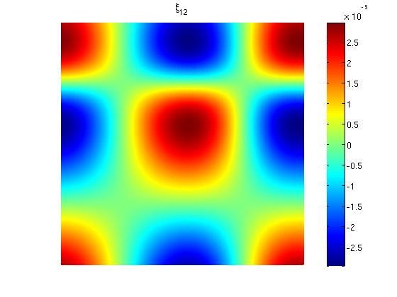

GUIDE 4 - Micro problems and correctors
Ondrej Budac, Timothee Pouchon, 2014
Contents
Definitions
d=2; dim = 2;
a = @guide4_a1;
dbtype guide4_a1.m
1 function tensor = guide4_a1(x, k ,l) 2 if k~=l 3 tensor = zeros(size(x,1),1); 4 % tensor = 0.15*(cos(x(:,1)*2*pi) + sin(x(:,2)*2*pi)); 5 else 6 tensor = 1 + 0.3*(sin(x(:,k)*2*pi) + sin(x(:,2)*2*pi)); 7 end 8 end
Mesh
mesh = structured_mesh(repmat([0,1],[1,d]), 400, struct('periodic',true, 'centre', true)); mesh.bdflag = 'dirichlet'; % applies to all the boundary = zero boundary mesh.volume = simplex_volume(mesh); NT = size(mesh.elem,1);
Cell problems XI
rhs = permute([zeros(d,1), eye(d)],[3,2,1]); vp = struct('a', a, 'f', rhs, 'elemtype', 'p1'); [xi, femspace, mesh, vp] = poisson(mesh, vp);
% Test solvability
display(sum(assemble_rhs(mesh, femspace, vp),1));
(:,:,1) =
1.781452589610932e-15
(:,:,2) =
-2.947642130379791e-14
for i=1:d clf; simpplot_sol(mesh, xi(:,:,i)); title(['\xi_' num2str(i)]); snapnow; end
Compute Homogenized tensor
a0 = zeros(d,d); [lambda, weight] = quadpts(dim, femspace.deg); for i=1:d for j=1:d for s=1:numel(weight) res = weight(s) * ... evalf(mesh, 'all', femspace, lambda(s,:), a, [], i, j); for m = 1:dim res = res + weight(s) * ... evalf(mesh, 'all', femspace, lambda(s,:), a, [], i, m) .* ... evalf(mesh, 'all', femspace, lambda(s,:), xi(:,:,j), m); end end a0(i,j) = dot(res, mesh.volume); end end display(a0);
a0 = 1.047335541608138 0.000000000123369 -0.000000000000003 1.199998311302660
First correctors: THETA
vp = struct('a', a, 'elemtype', 'p1'); [lambda, weight] = quadpts(dim, 1); NQ = numel(weight); rhs = zeros(NT, d+1, d^2, NQ); enctheta = reshape(1:d^2, [d,d]); for i=1:d for j=1:d for s=1:numel(weight) rhs(:, 1, enctheta(i,j), s) = ... evalf(mesh, 'all', femspace, lambda(s,:), a, [], i, j) ... -a0(i, j); for m=1:d rhs(:, 1, enctheta(i,j), s) = rhs(:, 1, enctheta(i,j), s) + ... evalf(mesh, 'all', femspace, lambda(s,:), a, [], i, m) .* ... evalf(mesh, 'all', femspace, lambda(s,:), xi(:,:,j), m); end rhs(:, i+1, enctheta(i,j), s) = ... evalf(mesh, 'all', femspace, lambda(s,:), xi(:,:,j)); end end end vp.f = rhs; [theta, femspace, mesh, vp] = poisson(mesh, vp);
% Test solvability
display(sum(assemble_rhs(mesh, femspace, vp),1));
(:,:,1) =
1.073793831629644e-15
(:,:,2) =
3.337133912224684e-17
(:,:,3) =
1.038750384535839e-16
(:,:,4) =
2.772088114610938e-15
% plot for i=1:d for j=1:d clf; simpplot_sol(mesh, theta(:,:,enctheta(i,j))); title(['\xi_{' num2str(i) num2str(j) '}']); snapnow; end end
Second correctors: Kappa
vp = struct('a', a, 'elemtype', 'p1'); [lambda, weight] = quadpts(dim, 1); NQ = numel(weight); rhs = zeros(NT, d+1, d^3, NQ); enckappa = reshape(1:d^3, [d,d,d]); for i=1:d for j=1:d for k=1:d for s=1:numel(weight) rhs(:, 1, enckappa(i,j,k), s) = ... (evalf(mesh, 'all', femspace, lambda(s,:), a, [], i, j) - a0(i, j)) .*... evalf(mesh, 'all', femspace, lambda(s,:), xi(:,:,k)); for m=1:d rhs(:, 1, enckappa(i,j,k), s) = rhs(:, 1, enckappa(i,j,k), s) + ... evalf(mesh, 'all', femspace, lambda(s,:), a, [], i, m) .* ... evalf(mesh, 'all', femspace, lambda(s,:), theta(:,:,enctheta(j,k)), m); end rhs(:, i+1, enckappa(i,j,k), s) = ... evalf(mesh, 'all', femspace, lambda(s,:), theta(:,:,enctheta(j,k))); end end end end vp.f = rhs; [kappa, femspace, mesh, vp] = poisson(mesh, vp);
% Test solvability
display(sum(assemble_rhs(mesh, femspace, vp),1));
(:,:,1) =
-3.884472582029030e-16
(:,:,2) =
-4.045158305543417e-16
(:,:,3) =
-5.985553537730427e-12
(:,:,4) =
-1.197157156965511e-11
(:,:,5) =
-9.206426419827718e-12
(:,:,6) =
-2.527047382643900e-11
(:,:,7) =
-1.806314768737838e-11
(:,:,8) =
-2.436373715622442e-11
% plot for i=1:d for j=1:d for k=1:d clf; simpplot_sol(mesh, kappa(:,:,enckappa(i,j,k))); title(['\kappa_{' num2str(i) num2str(j) num2str(k) '}']); snapnow; end end end